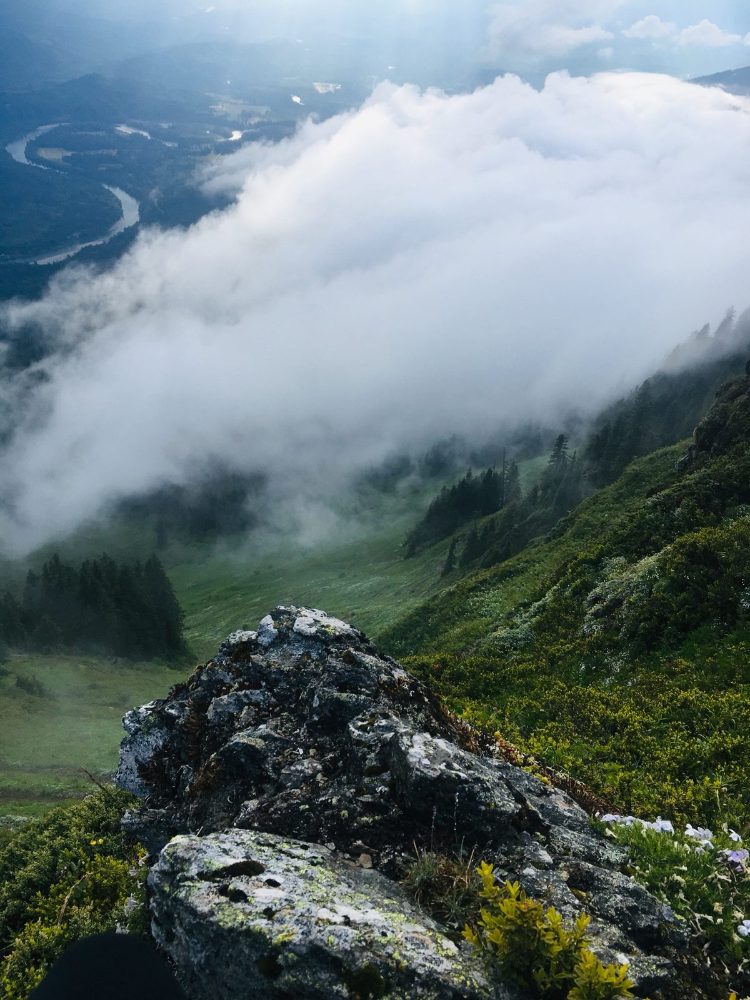
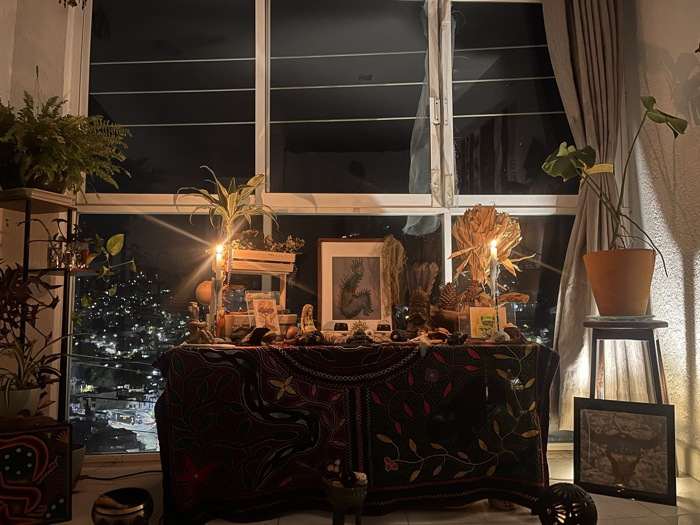

Testimonios
Semillas de cambio
Reflexiones de quienes han recorrido este camino.
Cada camino es personal, y cada persona vive este trabajo a su manera. Las palabras que siguen fueron compartidas por personas que han estado en espacio conmigo, con permiso para compartir sus reflexiones con su nombre o iniciales.
Agradezco a cada persona que ha confiado en mí para acompañar su camino y que se ha tomado el tiempo de compartir algo de su experiencia. Estas reflexiones ofrecen un vistazo de lo que este trabajo ha significado para ellas, honrando que no hay dos experiencias iguales.

Qué experiencia tan hermosa, hermana. Creo que eres muy buena trabajando con la medicina del Kambo. Disfruté mucho tu ceremonia y tus cantos. Sigue adelante y sigue compartiendo tu trabajo. Cuídate mucho. Te mando un gran abrazo desde lejos.
Después de tomar la medicina tuve una experiencia muy linda conectando con la naturaleza y haciendo un poco de meditación. La verdad es que me sentí muy bien. Fue como si mi mente y mi cuerpo estuvieran más en equilibrio, más en balance. La conexión que tuve fue muy fuerte y muy linda. Quiero seguir con la práctica de meditación y seguir sintiéndome mejor de ahora en adelante. También estoy sintiendo que me gustaría seguir trabajando contigo y con la medicina.
Siento que tú, y quizá también la medicina, me están ayudando con esa fuerza hoy. No es una solución mágica ni nada parecido, pero siento que haber tenido la conversación ha sido muy bueno, y poder expresar mis necesidades y todo eso. Lo logré.
Gracias a ti también por todo lo que me compartes. Me hace sentir que nos estamos entendiendo, que vamos caminando juntas y recibiendo la medicina en el camino. Muchas gracias.
Tu trabajo me pareció muy transformador. Estar en tu espacio y en tu energía fue una parte importante de lo que me faltaba cuando no estaba ahí. Espero que otras personas estén sintiendo ese mismo beneficio con tu trabajo.
Siento que me ayudó a trabajar ese proceso. Definitivamente tengo que cambiar varios hábitos para reforzar el trabajo de la medicina.
Tienes una manera muy especial, un talento, para crear un espacio donde alguien se siente merecedor de cuidado y de sanación. Estás muy conectada, cultural y espiritualmente, y te entregas por completo a atender lo que esa persona necesita en el momento. Durante todo el tiempo que estuve contigo me sentí muy sostenida y muy digna de sanación y cuidado. Definitivamente siento que moví algo de energía contigo.
Cada camino es distinto
Comparto estas palabras con gratitud por la confianza, la apertura y la conexión que dan sentido a este trabajo. Cada persona llega con su propia historia, intenciones y necesidades, y cada experiencia se despliega a su manera. No existe un único camino ni un resultado esperado, solo una invitación a encontrarte contigo con presencia, curiosidad y cuidado.
